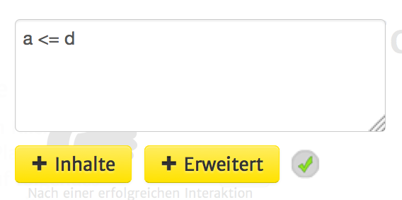
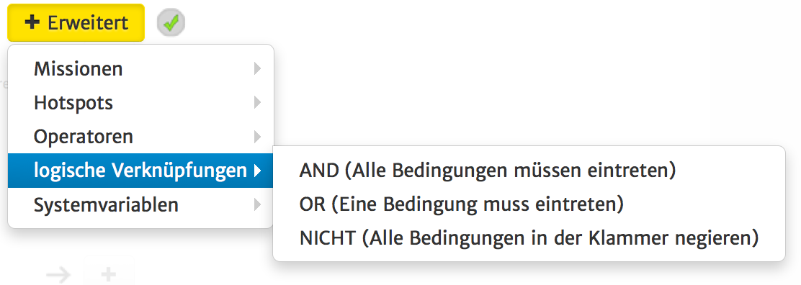

Bedingungen sind die größte Schwierigkeit, bei der Benutzung von Variablen in geoquest. Eine Bedingung kann nämlich schonmal kompliziert aussehen.
Die Grundidee ist aber eigentlich simpel:
Im Grunde geht es darum einen Ausdruck aufzuschreiben, der "wahr" oder "falsch" sein kann.
Schwieriger ist es, die richtige Schreibweise zu lernen.
Wir nehmen im folgenden an, dass wir folgende Variablen gesetzt haben:
a = 0
b = "eins"
c = true
d = a+1
Wir können nun bestimmte Aktionen ausführen, wenn diese Variablen bestimmte Werte annehmen, z.B.
falls die Textvariable b den Text "zwei" beinhaltet:
b = "zwei" (ist mit den oben definierten Variablen nicht wahr)
falls die Zahlvariable a kleiner als 3 ist
a < 3 (ist mit den oben definierten Variablen wahr)
falls die Wahrheitsvariable c wahr ist
c = true (ist mit den oben definierten Variablen wahr)
falls die Wahrheitsvariable c unwahr ist
c = false (ist mit den oben definierten Variablen nicht wahr)
falls die Zahlvariable d größer als 1 ist
d > 1 (ist mit den oben definierten Variablen nicht wahr)
falls die Zahlvariable d größer oder gleich 1 ist
d >= 1 (ist mit den oben definierten Variablen wahr)
Wir können auch zwei Variablen miteinander vergleichen:
falls a gleich d ist:
a = d (ist mit den oben definierten Variablen nicht wahr)
falls a ungleich d ist:
a = d (ist mit den oben definierten Variablen wahr)
falls a kleiner als d ist:
a < d (ist mit den oben definierten Variablen wahr)
Im Textfeld könnte das also z.B. so aussehen:

Nun würden alle Aktionen, die du unter "Dann" weiter unten anlegst, ausgeführt werden, weil
a = 0 und d = a +1 = 1 ist und weil 0 <= 1 wahr ist, wird der gesamte Ausdruck wahr.
Wir nehmen im folgenden wieder an, dass wir folgende Variablen gesetzt haben:
a = 0
b = "eins"
c = true
d = a+1
Manchmal möchtest du aber vielleicht mehr als eine Bedingung überprüfen. Dazu müssen zwei oder mehrere Bedingungen logisch verknüpft werden.
Es gibt drei Arten von logischer Verknüpfung, die du ebenfalls leicht unter dem gelben "Erweitert"-Button hinzufügen kannst:

AND/UND -> Die Bedingung wird wahr, wenn alle Teilbedingungen wahr sind. Sollte nur eine der Teilbedinugen unwahr sein, so ist die gesamte Bedingung unwahr, z.B.:
a = 0 AND b = "eins" AND c = true AND d =1 (ist wahr)
a = 0 AND b = "eins" AND c = true AND d =2 (ist unwahr)
OR/ODER -> Die Bedingung ist wahr, wenn eine der Teilbedingungen wahr ist. Es können alle bis auf eine der Teilbedingungen unwahr sein und die gesamte Bedingung wird dennoch wahr sein, z.B.:
a < 0 OR b = "zwei" OR c = false OR d = 1 (ist wahr, weil d = 1 wahr ist)
a < 0 OR b = "zwei" OR c = false OR d = 2 (ist unwahr, weil keine der Teilbedingungen wahr ist)
!/NOT/NICHT ->
Die Bedingung ist wahr, wenn die Bedingung in der Klammer unwahr ist. So kann jederzeit das Gegenteil einer Bedinungskette abgefragt werden.
a != d ist das gleiche wie !(a = d)
Anhand der Beispiele von oben erhalten wir nun gegenteilige Ergebnisse, wenn wir die Bedingungen in negierte Klammern stecken:
!(a = 0 AND b = "eins" AND c = true AND d =1) (ist unwahr, weil die Bedingung in der Klammer wahr ist, siehe oben)
!(a = 0 AND b = "eins" AND c = true AND d =2) (ist wahr, weil die Bedingung in der Klammer unwahr ist, siehe oben)
Wir nehmen im folgenden wieder an, dass wir folgende Variablen gesetzt haben:
a = 0
b = "eins"
c = true
d = a+1
Um mehrere dieser logischen Verknüpfungen gleichzeitig zu benutzen, haben wir anhand der Nicht-Verknüpfung schon gesehen, dass es notwendig ist Klammern zu setzen.
Sobald zwei verschiedene logische Verknüpfung benutzt werden, sind Klammern sofort einzusetzen und eine weitere logische Verknüpfung dazwischen zu setzen, z.B.
(a <= d AND b = "eins") OR (c = false AND d = 1)
(--------- wahr --------) OR (------ unwahr -------) = wahr
(a <= d OR b = "eins") AND (c = false OR d = 1)
(--------- wahr -------) AND(-------wahr-------) = wahr
Es können aber trotzdem mehrere Bedinungen des gleichen Typs ohne Klammern verknüpft werden:
a = 0 OR c = false OR a >= 1 OR (b = "eins" AND d >= 2 AND d <= 10) ----->
(wahr) OR (unwahr) OR (unwahr) OR ((wahr) AND (unwahr) AND (wahr)) ----->
(wahr) OR (unwahr) OR (unwahr) OR (unwahr)
-----> (wahr)
Außerdem kann eine beliebig tiefe Verschachtelung von Klammern benutzt werden:
a < 100 AND (a < 99 OR (a > 98 AND !(a <97 OR a > 96))) ------>
(wahr) AND (wahr OR (unwahr AND !(wahr OR unwahr))) ------>
(wahr) AND (wahr OR (unwahr AND !(wahr))) ----->
(wahr) AND (wahr OR (unwahr AND unwahr)) ------>
(wahr) AND (wahr OR (unwahr))
-------->
(wahr) AND (wahr) ----->
(wahr)
Solltest du noch weitere Fragen zum Thema Bedingungen haben, scheue dich nicht nachzufragen.